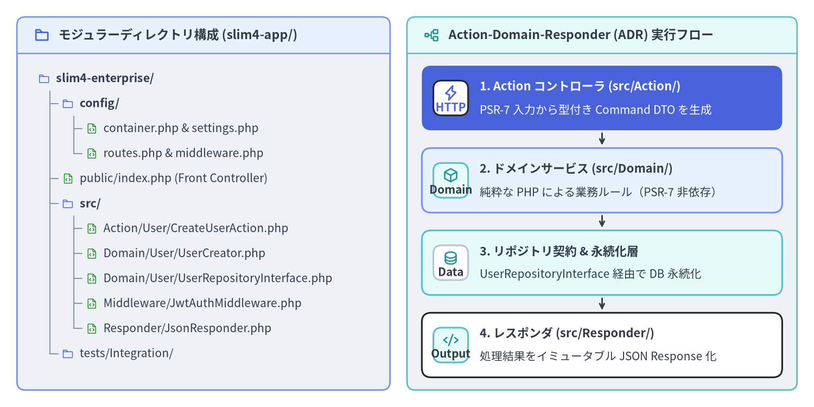
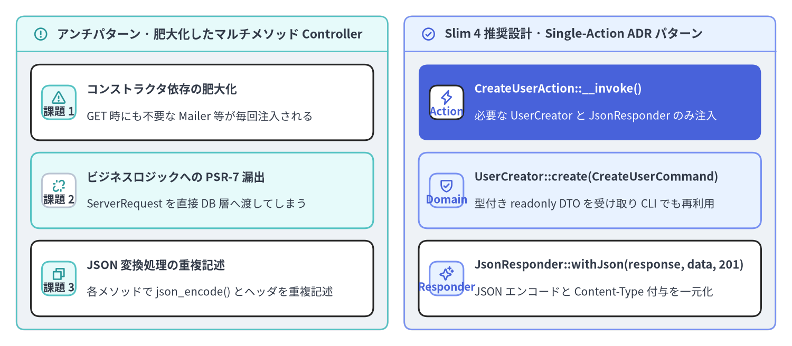

モジュラー設計と Action コントローラ
public/index.php 内に無名関数（Closure）でルートを直接記述するスタイルはプロトタイプ作成には最適ですが、本番運用の Slim 4（v4.15.3）アプリケーションでは、設定・HTTP 入出力・ドメインロジック・データ永続化を明確なレイヤへ分離する必要があります。モジュラーなディレクトリ構成（config/, public/, src/Action/, src/Domain/, src/Middleware/, src/Responder/）と ADR（Action-Domain-Responder）パターンおよび Single-Action Controller を組み合わせることで、高速な起動性能を保ちながら、単体テストが容易でフレームワークへの密結合がないアーキテクチャを実現できます。

Source Code
from drawlib.canvas import save, setup
from drawlib.icons import phosphor
from drawlib.preset_colors import CssColors
from drawlib.smartarts import CardList, Panel, TreeNode
from drawlib.styles import Colors, Styles
setup(width=192, height=96, dpi=150)
p_left = Panel(
"モジュラーディレクトリ構成 (slim4-app/)",
style=Styles.Neutral.patch(shape_r=2.0),
header_style=Styles.PrimaryNeutral.patch(shape_line_width=1.2),
text_style=Styles.DarkBold.patch(text_size=11.0),
icon=phosphor.folder,
icon_style=Styles.PrimaryBold,
header_variant="filled",
header_height=8.5,
)
p_left.draw((4.0, 4.0), width=88.0, height=88.0)
TreeNode.register_drawing_item(
name="dir_icon",
location="before",
padding_width=4.2,
function=phosphor.folder,
style=Styles.Primary.patch(icon_color=Colors.Primary),
args={"width": 3.0},
)
TreeNode.register_drawing_item(
name="php_icon",
location="before",
padding_width=4.2,
function=phosphor.file_code,
style=Styles.Primary.patch(icon_color=CssColors.ForestGreen),
args={"width": 3.0},
)
tree_root = TreeNode(
"slim4-enterprise/",
text_style=Styles.DarkBold.patch(text_size=10.2),
line_style=Styles.Muted.patch(line_width=1.0),
line_horizontal_margin=2.8,
line_horizontal_length=2.8,
line_vertical_margin=5.9,
children=[
TreeNode(
"config/",
children=[
TreeNode("container.php & settings.php", text_style=Styles.Dark.patch(text_size=10.0)).set_drawing_item("php_icon"),
TreeNode("routes.php & middleware.php", text_style=Styles.Dark.patch(text_size=10.0)).set_drawing_item("php_icon"),
],
).set_drawing_item("dir_icon"),
TreeNode(
"public/index.php (Front Controller)",
text_style=Styles.Dark.patch(text_size=10.0),
).set_drawing_item("php_icon"),
TreeNode(
"src/",
children=[
TreeNode("Action/User/CreateUserAction.php", text_style=Styles.Dark.patch(text_size=10.0)).set_drawing_item("php_icon"),
TreeNode("Domain/User/UserCreator.php", text_style=Styles.Dark.patch(text_size=10.0)).set_drawing_item("php_icon"),
TreeNode("Domain/User/UserRepositoryInterface.php", text_style=Styles.Dark.patch(text_size=10.0)).set_drawing_item("php_icon"),
TreeNode("Middleware/JwtAuthMiddleware.php", text_style=Styles.Dark.patch(text_size=10.0)).set_drawing_item("php_icon"),
TreeNode("Responder/JsonResponder.php", text_style=Styles.Dark.patch(text_size=10.0)).set_drawing_item("php_icon"),
],
).set_drawing_item("dir_icon"),
TreeNode("tests/Integration/", text_style=Styles.Dark.patch(text_size=10.0)).set_drawing_item("dir_icon"),
],
).set_drawing_item("dir_icon")
tree_root.draw(xy=(9.0, 77.5))
p_right = Panel(
"Action-Domain-Responder (ADR) 実行フロー",
style=Styles.Neutral.patch(shape_r=2.0),
header_style=Styles.SecondaryNeutral.patch(shape_line_width=1.2),
text_style=Styles.DarkBold.patch(text_size=11.0),
icon=phosphor.tree_structure,
icon_style=Styles.SecondaryBold,
header_variant="filled",
header_height=8.5,
)
p_right.draw((96.0, 4.0), width=92.0, height=88.0)
rx, rw, rh = p_right.get_content_box((96.0, 4.0), width=92.0, height=88.0, padding=(3.5, 3.0))
cl_right = CardList(
style=Styles.White,
text_style=Styles.DarkBold.patch(text_size=10.5),
description_style=Styles.Dark.patch(text_size=10.0),
badge_shape="rounded_rect",
badge_style=Styles.SecondaryNeutral,
badge_text_style=Styles.DarkBold.patch(text_size=10.0),
icon_style=Styles.SecondaryBold,
direction="vertical",
spacing=2.8,
show_arrows=True,
arrow_style=Styles.DarkBold.patch(line_arrow_head_scale=10, line_width=1.4),
)
cl_right.add(
"1. Action コントローラ (src/Action/)",
"PSR-7 入力から型付き Command DTO を生成",
badge_text="HTTP",
icon=phosphor.lightning,
style=Styles.PrimaryFlat,
text_style=Styles.WhiteBold.patch(text_size=10.5),
description_style=Styles.White.patch(text_size=10.0),
badge_style=Styles.White,
badge_text_style=Styles.PrimaryBold.patch(text_size=10.0),
icon_style=Styles.PrimaryBold,
)
cl_right.add(
"2. ドメインサービス (src/Domain/)",
"純粋な PHP による業務ルール（PSR-7 非依存）",
badge_text="Domain",
icon=phosphor.cube,
style=Styles.PrimaryNeutral,
)
cl_right.add(
"3. リポジトリ契約 & 永続化層",
"UserRepositoryInterface 経由で DB 永続化",
badge_text="Data",
icon=phosphor.database,
style=Styles.SecondaryNeutral,
badge_style=Styles.White.patch(shape_line_color=Colors.Gray4),
badge_text_style=Styles.DarkBold.patch(text_size=10.0),
)
cl_right.add(
"4. レスポンダ (src/Responder/)",
"処理結果をイミュータブル JSON Response 化",
badge_text="Output",
icon=phosphor.code,
)
cl_right.draw(xy=rx, width=rw, height=rh)
save()
本番運用を見据えたディレクトリ構成と設定ファイルの分割
モジュラー化された Slim 4 コードベースでは、public/index.php の中に直接ルート定義や DI 設定を書き込むことはありません。config/ ディレクトリ配下に設定クロージャ（callable(App): void 等）を返す PHP ファイルを配置し、src/ 配下で HTTP ハンドラとドメイン層を明確に分離します。
| パス / モジュール | 責務と役割 | 許可される主な依存先 |
|---|---|---|
public/index.php |
コンテナを起動して $app->run() を呼ぶ SAPI エントリポイント |
config/bootstrap.php |
config/settings.php |
環境変数を読み取り、型付き AppSettings オブジェクトへ集約 |
標準 PHP 型および環境変数 |
config/container.php |
PSR-11 コンテナ定義（App::class、リポジトリ実装、LoggerInterface） |
Psr\Container\ContainerInterface, Slim\Factory\AppFactory |
config/middleware.php |
グローバル PSR-15 ミドルウェアと 3 つの基本ミドルウェアの登録 | Slim\App, src/Middleware/* |
config/routes.php |
ルートグループと URI パターンから src/Action/* クラスへのマッピング |
Slim\App, Slim\Routing\RouteCollectorProxy, src/Action/* |
src/Action/ |
Single-Action コントローラ（__invoke または RequestHandlerInterface） |
PSR-7, src/Domain/* サービス/DTO, src/Responder/* |
src/Domain/ |
ドメインサービス、値オブジェクト、DTO、リポジトリインターフェース | 純粋な PHP のみ（Psr\Http\* や Slim\* への依存禁止） |
src/Responder/ |
再利用可能な PSR-7 レスポンス生成クラス（JsonResponder） |
Psr\Http\Message\ResponseFactoryInterface, ResponseInterface |
config/routes.php と config/middleware.php が static function (App $app): void を返す設計にしておくことで、本番用の public/index.php と PHPUnit の結合テストスイートの双方から、まったく同じ設定で Slim\App インスタンスを構築できます。
<?php
declare(strict_types=1);
// File: config/routes.php
use App\Action\Health\HealthCheckAction;
use App\Action\User\CreateUserAction;
use App\Action\User\GetUserAction;
use App\Middleware\JwtAuthMiddleware;
use Slim\App;
use Slim\Routing\RouteCollectorProxy;
return static function (App $app): void {
$app->get('/health', HealthCheckAction::class)->setName('health.check');
$app->group('/api/v1', function (RouteCollectorProxy $v1): void {
$v1->post('/users', CreateUserAction::class)->setName('users.create');
$v1->get('/users/{id:[0-9]+}', GetUserAction::class)->setName('users.get');
})->add(JwtAuthMiddleware::class);
};
同様に、config/middleware.php ではカスタムミドルウェアと Slim の 3 つの基本ミドルウェアを LIFO 順序に従って登録します。
<?php
declare(strict_types=1);
// File: config/middleware.php
use App\Support\AppSettings;
use Psr\Log\LoggerInterface;
use Slim\App;
return static function (App $app): void {
$container = $app->getContainer();
$settings = $container?->get(AppSettings::class);
$logger = $container?->get(LoggerInterface::class);
// 1. 内層: JSON / form-urlencoded / XML リクエストボディを解析
$app->addBodyParsingMiddleware();
// 2. 中間層: FastRoute によるルート照合を実行し RouteContext を設定
$app->addRoutingMiddleware();
// 3. 最外層（最後に追加 -> 最初に実行）: すべての Throwable 例外をキャッチ
$app->addErrorMiddleware(
displayErrorDetails: $settings ? $settings->displayErrorDetails : false,
logErrors: $settings ? $settings->logErrors : true,
logErrorDetails: $settings ? $settings->logErrorDetails : true,
logger: $logger
);
};
ADR パターンと Single-Action コントローラ設計
従来の MVC フレームワークでは、1 つの UserController クラスの中に index(), show(), store(), update(), destroy() といった多数のメソッドを詰め込むスタイルが一般的でした。しかしこの方式では、コントローラのコンストラクタに 8〜10 個ものサービスクラスが注入され、1 回のリクエストで 1 メソッドしか実行しないにもかかわらず不要な依存オブジェクトまで毎回インスタンス化されてしまいます。
Slim 4 におけるベストプラクティスは、ADR（Action-Domain-Responder）パターンに基づく Single-Action Controller（単一アクションコントローラ） です。1 つの HTTP エンドポイントにつき 1 つの final readonly クラスを作成し、__invoke()（または handle()）メソッドのみを持たせます。

Source Code
from drawlib.canvas import save, setup
from drawlib.icons import phosphor
from drawlib.smartarts import CardList, Panel
from drawlib.styles import Colors, Styles
setup(width=192, height=84, dpi=150)
p_left = Panel(
"アンチパターン · 肥大化したマルチメソッド Controller",
style=Styles.Neutral.patch(shape_r=2.0),
header_style=Styles.SecondaryNeutral.patch(shape_line_width=1.2),
text_style=Styles.DarkBold.patch(text_size=11.0),
icon=phosphor.warning_circle,
icon_style=Styles.SecondaryBold,
header_variant="filled",
header_height=8.5,
)
p_left.draw((4.0, 4.0), width=90.0, height=76.0)
lx, lw, lh = p_left.get_content_box((4.0, 4.0), width=90.0, height=76.0, padding=(3.5, 3.2))
cl_left = CardList(
style=Styles.White,
text_style=Styles.DarkBold.patch(text_size=10.5),
description_style=Styles.Dark.patch(text_size=10.0),
badge_shape="rounded_rect",
badge_style=Styles.SecondaryNeutral,
badge_text_style=Styles.DarkBold.patch(text_size=10.0),
icon_style=Styles.SecondaryBold,
direction="vertical",
spacing=3.0,
)
cl_left.add(
"コンストラクタ依存の肥大化",
"GET 時にも不要な Mailer 等が毎回注入される",
badge_text="課題 1",
icon=phosphor.warning,
)
cl_left.add(
"ビジネスロジックへの PSR-7 漏出",
"ServerRequest を直接 DB 層へ渡してしまう",
badge_text="課題 2",
icon=phosphor.link_break,
style=Styles.SecondaryNeutral,
badge_style=Styles.White.patch(shape_line_color=Colors.Gray4),
badge_text_style=Styles.DarkBold.patch(text_size=10.0),
)
cl_left.add(
"JSON 変換処理の重複記述",
"各メソッドで json_encode() とヘッダを重複記述",
badge_text="課題 3",
icon=phosphor.copy,
)
cl_left.draw(xy=lx, width=lw, height=lh)
p_right = Panel(
"Slim 4 推奨設計 · Single-Action ADR パターン",
style=Styles.Neutral.patch(shape_r=2.0),
header_style=Styles.PrimaryNeutral.patch(shape_line_width=1.2),
text_style=Styles.DarkBold.patch(text_size=11.0),
icon=phosphor.check_circle,
icon_style=Styles.PrimaryBold,
header_variant="filled",
header_height=8.5,
)
p_right.draw((98.0, 4.0), width=90.0, height=76.0)
rx, rw, rh = p_right.get_content_box((98.0, 4.0), width=90.0, height=76.0, padding=(3.5, 3.2))
cl_right = CardList(
style=Styles.White,
text_style=Styles.DarkBold.patch(text_size=10.5),
description_style=Styles.Dark.patch(text_size=10.0),
badge_shape="rounded_rect",
badge_style=Styles.PrimaryNeutral,
badge_text_style=Styles.PrimaryBold.patch(text_size=10.0),
icon_style=Styles.PrimaryBold,
direction="vertical",
spacing=3.0,
)
cl_right.add(
"CreateUserAction::__invoke()",
"必要な UserCreator と JsonResponder のみ注入",
badge_text="Action",
icon=phosphor.lightning,
style=Styles.PrimaryFlat,
text_style=Styles.WhiteBold.patch(text_size=10.5),
description_style=Styles.White.patch(text_size=10.0),
badge_style=Styles.White,
badge_text_style=Styles.PrimaryBold.patch(text_size=10.0),
icon_style=Styles.PrimaryBold,
)
cl_right.add(
"UserCreator::create(CreateUserCommand)",
"型付き readonly DTO を受け取り CLI でも再利用",
badge_text="Domain",
icon=phosphor.shield_check,
style=Styles.PrimaryNeutral,
)
cl_right.add(
"JsonResponder::withJson(response, data, 201)",
"JSON エンコードと Content-Type 付与を一元化",
badge_text="Responder",
icon=phosphor.sparkle,
)
cl_right.draw(xy=rx, width=rw, height=lh)
save()
__invoke() による Single-Action コントローラの実装
$v1->post('/users', CreateUserAction::class) のようにクラス名をルートへ登録すると、Slim\CallableResolver が PSR-11 コンテナから CreateUserAction を解決し、アクティブな呼び出し戦略（デフォルトは RequestResponse）を通じて __invoke(ServerRequestInterface $request, ResponseInterface $response, array $args): ResponseInterface を呼び出します。
Action コントローラの責務は、（1）HTTP リクエストから入力を取り出して型付き DTO を組み立てる、（2）ドメインサービスを呼び出す、（3）JsonResponder で PSR-7 レスポンスへ変換する、の 3 ステップだけに限定されます。
<?php
declare(strict_types=1);
namespace App\Action\User;
use App\Domain\User\CreateUserCommand;
use App\Domain\User\UserCreator;
use App\Responder\JsonResponder;
use Psr\Http\Message\ResponseInterface as Response;
use Psr\Http\Message\ServerRequestInterface as Request;
final readonly class CreateUserAction
{
public function __construct(
private UserCreator $userCreator,
private JsonResponder $responder,
) {
}
/**
* @param array<string, string> $args
*/
public function __invoke(Request $request, Response $response, array $args = []): Response
{
$body = (array) $request->getParsedBody();
$command = new CreateUserCommand(
email: (string) ($body['email'] ?? ''),
displayName: (string) ($body['display_name'] ?? ''),
);
$user = $this->userCreator->create($command);
return $this->responder->withJson($response, [
'id' => $user->id,
'email' => $user->email,
'display_name' => $user->displayName,
], 201);
}
}
レスポンスの JSON シリアライズ処理を共通の JsonResponder に切り出すことで、すべてのエンドポイントで JSON_THROW_ON_ERROR | JSON_UNESCAPED_SLASHES | JSON_UNESCAPED_UNICODE フラグと Content-Type: application/json ヘッダを統一できます。
<?php
declare(strict_types=1);
namespace App\Responder;
use Psr\Http\Message\ResponseInterface;
final readonly class JsonResponder
{
/**
* @param array<string, mixed> $data
*/
public function withJson(
ResponseInterface $response,
array $data,
int $status = 200
): ResponseInterface {
$payload = json_encode(
$data,
JSON_THROW_ON_ERROR | JSON_UNESCAPED_SLASHES | JSON_UNESCAPED_UNICODE
);
$response->getBody()->write($payload);
return $response
->withStatus($status)
->withHeader('Content-Type', 'application/json; charset=utf-8');
}
}
PSR-15 RequestHandlerInterface によるアクション実装
Slim の CallableResolver::resolveRoute()（Slim/CallableResolver.php:68-113）は、__invoke() だけでなく Psr\Http\Server\RequestHandlerInterface を実装したクラスもネイティブに判別し、[$instance, 'handle'] へと解決します。Slim 組み込みの RequestHandler 呼び出し戦略（new RequestHandler(true)）と組み合わせることで、Action コントローラ自体を標準的な PSR-15 リクエストハンドラとして実装することも可能です。
<?php
declare(strict_types=1);
namespace App\Action\User;
use App\Domain\User\UserReader;
use App\Responder\JsonResponder;
use Psr\Http\Message\ResponseFactoryInterface;
use Psr\Http\Message\ResponseInterface;
use Psr\Http\Message\ServerRequestInterface;
use Psr\Http\Server\RequestHandlerInterface;
final readonly class GetUserAction implements RequestHandlerInterface
{
public function __construct(
private UserReader $userReader,
private ResponseFactoryInterface $responseFactory,
private JsonResponder $responder,
) {
}
public function handle(ServerRequestInterface $request): ResponseInterface
{
// RequestHandler(appendRouteArgumentsToRequestAttributes: true) の有効時は
// FastRoute の URL パラメータが PSR-7 リクエスト属性として取得できる
$userId = (int) $request->getAttribute('id', 0);
$user = $this->userReader->getById($userId);
$response = $this->responseFactory->createResponse();
return $this->responder->withJson($response, [
'id' => $user->id,
'email' => $user->email,
'display_name' => $user->displayName,
]);
}
}
ドメイン層の HTTP 非依存設計と型付き設定オブジェクト（AppSettings）
エンタープライズ規模の Slim 4 アプリケーションを長期にわたって保守しやすく保つには、次の 2 つの設計ルールを徹底します。
src/Domain/に PSR-7 オブジェクトを持ち込まない: ドメインサービスやリポジトリにServerRequestInterfaceを直接渡してはいけません。代わりにイミュータブルなreadonlyDTO（CreateUserCommand）を渡してドメインオブジェクトを受け取ることで、HTTP リクエストをモックせずにミリ秒単位で単体テストを実行でき、CLI バッチや非同期キューワーカーからも同じドメインサービスを再利用できます。- 散在する
$_ENV参照を型付きAppSettingsクラスへ集約する: コントローラやミドルウェアの内部で直接$_ENV['APP_DEBUG']やgetenv('DB_DSN')を呼び出すと、テスト時の設定差し替えが困難になり型変換バグの原因になります。config/settings.phpで生成したreadonly class AppSettingsを PSR-11 コンテナ経由で注入しましょう。
<?php
declare(strict_types=1);
namespace App\Domain\User;
use DomainException;
final readonly class CreateUserCommand
{
public function __construct(
public string $email,
public string $displayName,
) {
}
}
final readonly class UserCreator
{
public function __construct(
private UserRepositoryInterface $users,
) {
}
public function create(CreateUserCommand $command): UserEntity
{
if (!filter_var($command->email, FILTER_VALIDATE_EMAIL)) {
throw new DomainException('A valid email address is required.');
}
return $this->users->insert($command->email, trim($command->displayName));
}
}
また、環境変数の読み取りとデフォルト値・型変換はイミュータブルな AppSettings 値オブジェクトにカプセル化します。
<?php
declare(strict_types=1);
namespace App\Support;
final readonly class AppSettings
{
public function __construct(
public string $appEnv,
public bool $displayErrorDetails,
public bool $logErrors,
public bool $logErrorDetails,
public ?string $routeCacheFile,
public string $dbDsn,
) {
}
public static function fromEnv(array $env): self
{
$isProd = ($env['APP_ENV'] ?? 'production') === 'production';
return new self(
appEnv: (string) ($env['APP_ENV'] ?? 'production'),
displayErrorDetails: !$isProd,
logErrors: true,
logErrorDetails: true,
routeCacheFile: $isProd ? __DIR__ . '/../../var/cache/routes.php' : null,
dbDsn: (string) ($env['DB_DSN'] ?? 'sqlite::memory:'),
);
}
}
続いて PSR-11 コンテナと Callable 解決 に進み、PHP-DI、AppFactory::createFromContainer()、Slim\CallableResolver、およびミドルウェアの遅延解決（addDeferred）がこれらのモジュラーレイヤをどのように自動ワイヤリングするかを詳しく見ていきましょう。基本構成の復習には クイックスタートと基本ミドルウェア、ルーティング設計には FastRoute パターン・グループ・キャッシュ、クラス契約の詳細には Slim 4 API リファレンス および Slim 4 内部アーキテクチャ解説 をご参照ください。